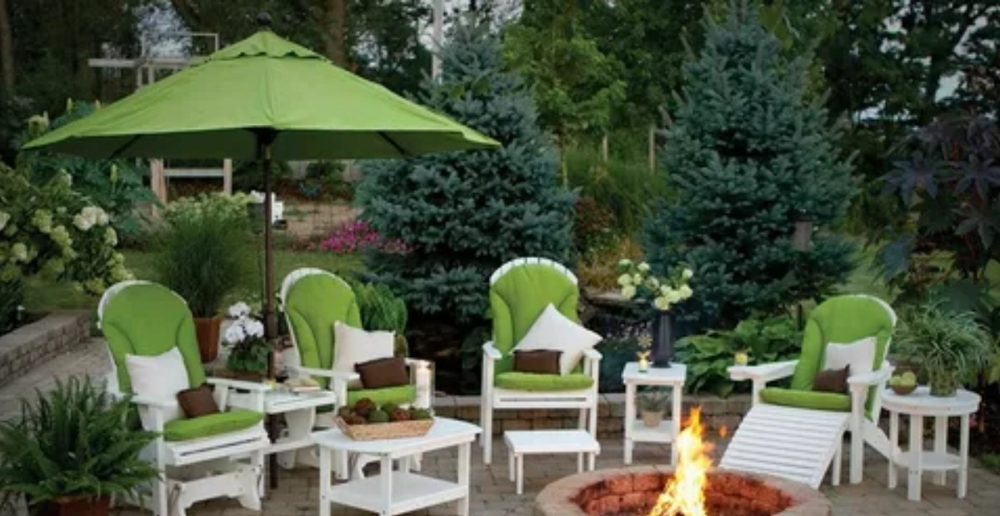
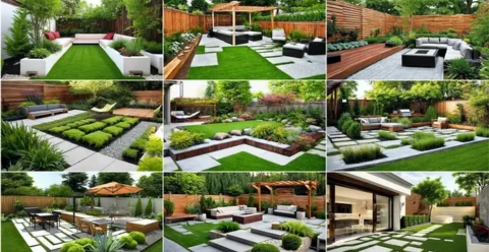
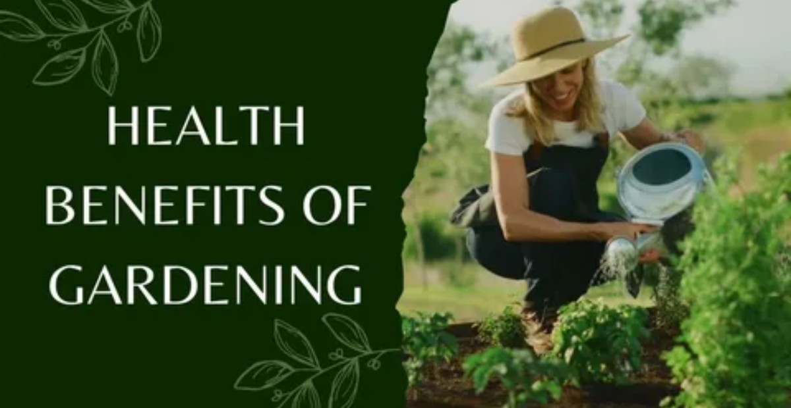
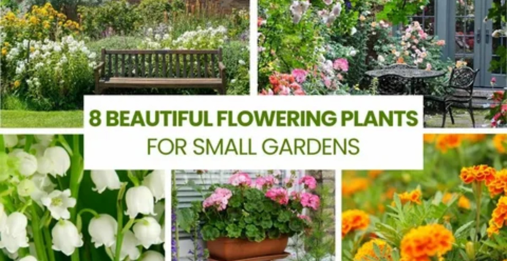

Gardening Area: A Complete Guide to Planning and Designing Your Garden

A gardening area is a space dedicated to growing flowers, vegetables, herbs, and other plants. Planning your gardening area properly helps ensure your plants get enough sunlight, water, and healthy soil to thrive. This guide walks you through practical ways to plan and design a beautiful, low-maintenance gardening area that you'll genuinely enjoy.
A well-designed garden can transform how your home looks and feels, creating a calmer, more inviting outdoor space. By planning ahead and keeping your design simple, you can build a gardening area that's easy to care for and truly rewarding.
Gardening is more enjoyable when you have a clear plan. Creating a gardening area involves a few simple, deliberate steps — from choosing the right location to preparing your soil and selecting your plants. Below, we'll walk through each step so you can build a gardening area that suits your space and your goals.
Choosing the Best Location for Your Gardening Area

Proper drainage is essential for any gardening area. If water can't drain away, it will pool around your plants' roots, which can lead to root rot and other problems. Choose a location where water drains well to keep your plants healthy.
Look for a spot with quality soil and enough space for your plants to grow comfortably. Choosing the right location is one of the most important steps in creating a gardening area that stays healthy and looks great year-round.
Benefits of Having a Gardening Area

A gardening area is one of the best additions you can make to your home. It gives you room to grow a wide variety of plants — flowers, vegetables, herbs, and more — that you can enjoy every day.
Having a gardening area also benefits you personally. It keeps you active, gives you the satisfaction of growing your own plants, and can even add to your home's value when it's well-maintained and attractive.
Key Benefits of Having a Gardening Area
- Boosts your home's curb appeal and overall look
- Gives you space to grow a wide variety of plants
- Creates a peaceful environment and reduces stress
Best Plants for Your Gardening Area

When choosing plants for your gardening area, pick varieties suited to your local climate. You'll also want to consider your soil type and how much sunlight your garden receives before deciding what to plant.
Vegetables like tomatoes, spinach, and peppers are great additions, while flowers such as roses and lavender add color and fragrance. Herbs like mint pair well with vegetables and flowers to create a gardening area that's both useful and beautiful.
How Do You Plan and Design the Perfect Gardening Area
Start with a location that has good soil and easy access to water. Take stock of how much space you have and think about what you'd like to include — flowers, vegetables, herbs, or a mix of everything.
Once you know your space, sketch a layout that leaves enough room between plants so each one can grow well. Add paths so you can move through your gardening area easily, and choose plants suited to your local climate for the best results.
Measure Your Gardening Space
Measure your available space before you start planting. This tells you how many plants you can realistically fit and helps ensure each one gets enough sunlight and airflow to grow well.
Create a Simple Garden Layout
A clear layout keeps your gardening area looking neat and organized. Sketch out where your plants, paths, and garden beds will go, and don't be afraid to adjust the plan as your garden takes shape.
Prepare Healthy Soil
Healthy soil is the foundation of a thriving gardening area. Mix in compost or organic fertilizer before planting to give your soil the nutrients plants need to grow strong.
Frequently Asked Questions About Gardening Areas
How do gardening areas work?
A gardening area is simply a dedicated space in your yard where you grow plants — commonly flowers and vegetables together.
Does a gardening area need a lot of sunlight?
Most plants need six to eight hours of sunlight a day to grow well, so choosing a sunny spot gives your gardening area the best chance to thrive.
What are the best plants for gardening?
Roses are a popular choice for their fragrance, tomatoes are rewarding because you can eat what you grow, and herbs like basil and mint are easy to maintain alongside vegetables like spinach.
What makes a gardening area healthy?
Keeping weeds under control helps your plants get the water and nutrients they need without competition, which keeps your entire gardening area healthier.
Conclusion
A well-planned gardening area can make your home feel calmer, more welcoming, and more enjoyable. By choosing the right spot, preparing your soil, and selecting plants suited to your space, you can create a garden that's easy to maintain and full of life. Your gardening area is part of what makes your home special, so it's worth the time to make it the best it can be.
Maintaining a beautiful gardening area takes ongoing care: watering your plants, removing weeds, and avoiding common design mistakes. Staying consistent with these small tasks will keep your garden healthy and looking good all year round.
Whether you have a large backyard or a small outdoor space, you can still create a beautiful gardening area with the right plan. Use the tips in this guide to design a garden filled with plants you love, and enjoy a space that makes your home feel even better.
Back to Categories